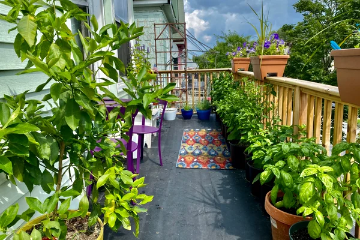
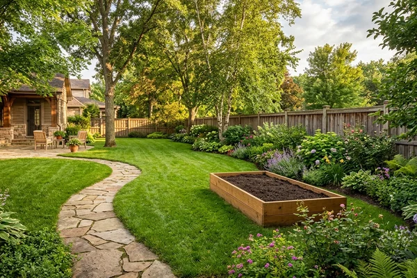
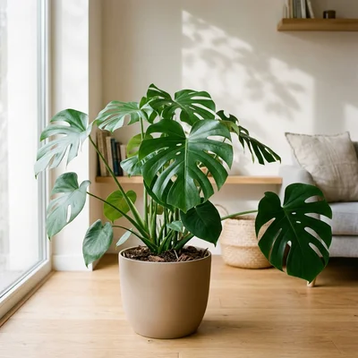
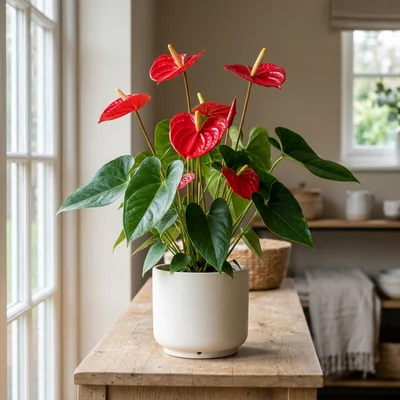
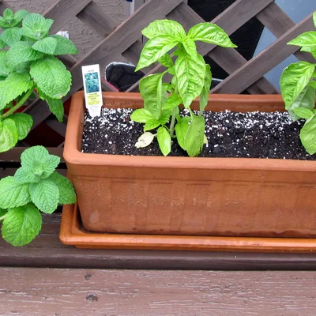

Um canto perto da janela
Ambiente interno com boa luminosidade e ventilação direta.
Escolha um espaço, uma planta e o que levar da loja. No final, veja o que você montou e o que consultar antes de começar de verdade.
Toque na opção que mais se aproxima do espaço que você tem disponível:
Ambiente interno com boa luminosidade e ventilação direta.

Espaço semiaberto ideal para cultivo vertical e vasos médios.

Área ampla ao ar livre com solo direto ou espaço para canteiros.
“Cantinho escolhido! Antes de levar uma muda para casa, observe quanto sol direto bate nesse lugar ao longo do dia.”
Cada tipo de planta tem seu próprio ritmo e exigência de iluminação:

Folhas marcantes como Monstera, Jiboia ou Zamioculca.

Cores vivas como Antúrio, Lírio da Paz ou Lavanda.

Aromáticos e frescos como Alecrim, Manjericão ou Hortelã.
No celular, toque no item para colocar ou tirar da sua cesta:
O momento da chegada é decisivo para a adaptação da planta. O que você faz primeiro?
“Dê uma olhada na luz do local e sinta o substrato antes de regar. A muda pode ter saído do viveiro com o substrato ainda úmido.”
Veja a composição visual do espaço que você planejou e os passos fundamentais para começar com segurança:
um cantinho de temperos na varanda.
observe quanto sol direto bate ali e consulte quais espécies combinam com essa condição. Depois, confira o que vale levar do viveiro.
No Guia de Bolso do Jardineiro, você consulta quais plantas escolher, quais ferramentas comprar e como comparar os adubos. Comece pelo nível iniciante e avance conforme ganhar prática.
Conhecer o Guia de Bolso